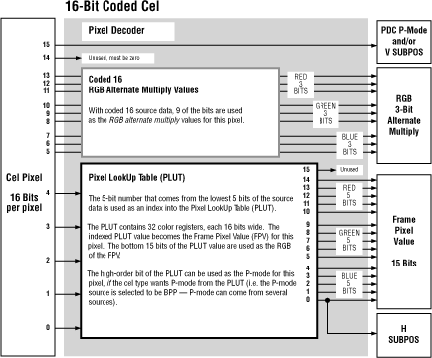

The pixel decoder pulls data out of the cel's pixels as they pass through.
That data always includes a 15-bit color value, a VH value and, if appropriate,
a P-mode value and an AMV. The source data's preamble tells the pixel decoder
what kind of pixel format the cel uses so the pixel decoder knows how to decode
the incoming pixels. If the cel type does not include all of the values listed
above, the decoder fills in those values by reading the CCB, where default
values are stored. For example, if a cel does not include an AMV, the decoder
uses a default AMV from the CCB and sends that value out with each pixel.
Reading Color Values in Coded Pixels
If the cel is a coded cel, the pixel decoder uses a pixel lookup table (PLUT),
which contains 32 registers of 16 bits each. Those 16 bits contain the same kind
of value used in the frame buffer, which, depending on the display mode, can
contain a 15-bit color value, 1 or 2 bits of VH value, or whatever the display
mode mandates. The 16-bit values in the PLUT's registers can be set by the CCB.
In modes where the P-Mode bit did not come from the original coded pixel value,
the P-Mode bit can come from the most significant bit of the entry in the PLUT
table.
To access the 32 registers, each incoming coded pixel must specify a 5-bit
color value, which is tricky if the cel uses only 1, 2, or 4 bits per pixel.
If the pixel has less than 5 bits, the pixel decoder uses the pixel's bits as
low-order color value bits and depends on the CCB for default values for the
missing high-order bits. For example, when the pixel decoder reads a 1-bit coded
pixel, it uses the pixel's 1-bit value for color value bit 0; bits 1 to 4 are
filled in with default values set in the CCB.
Reading Color Values in Uncoded Pixels
If the cel is uncoded, the pixel decoder does not use the PLUT to
interpret color values in the cel's pixels. It uses the 15 lowest bits
of the pixel directly as the 15-bit color value if the cel uses 16-bit
pixels; it unfolds a 15-bit color value from each pixel if the cel
uses only 8-bit pixels. To unfold the pixel, it uses bits 5, 6, and 7 as the
three highest bits (12, 13, 14) of the red value; uses bits 2, 3, and 4 as the
three highest bits (7, 8, 9) of the green value; and uses bits 0 and 1 as the
two highest bits (3, 4) of the blue value. It then either fills in the missing
bits with 0s, or it duplicates the high-order bits based on the setting of the
REP 8 bit in the preamble for each component value as shown in Figure 1.
Passing Values to Other Cel Engine Components
Once the pixel decoder has extracted values from an incoming pixel, it sends them on to the other cel engine components. Most values go to the pixel processor. The 15-bit color value is read as primary or secondary data; the AMV is read as modifying data; and the P-mode value goes to control the pixel-processor parameters.
The VH values are sent directly to the projector and bypass the pixel processor (which processes only 15-bit color values). The projector merges the VH values back with the color values coming out of the pixel processor.
There is one exception to the above data flow: a15-bit color value bypasses the pixel processor if the value coming out of the pixel decoder PLUT is 000. The 000 specifies a transparent pixel and tells the projector to skip over that pixel's position without writing to the frame buffer. That pixel is not processed by the pixel processor, which saves valuable processing time. (If you want a 000 pixel to pass its 000 value into the pixel processor for processing, that is, you do not want to declare it transparent, you can set the CCB_BGND flag bit in the CCB flags word to defeat this feature.)
Uncoding Rules
The following figures show how the pixel decoder decodes the pixels of each type of cel.
Figure 1 shows how the pixel decoder reads the first 15 bits of a 16-bit uncoded pixel directly as a 15-bit color value. It reads bit 15 as either a V value and/or a
P-mode value. It can optionally read bit 0 as an H value. It cannot extract an AMV value.
Figure 2: Unfolding 8-bit uncoded pixels into a 15-bit color value.
Figure 3 shows how the pixel decoder uses 0 to 4 bits of a 16-bit coded pixel as a reference to the PLUT, bits 5 to 13 to specify individual 3-bit AMVs for red, green, and blue pixel processing, and bit 15 as a P-mode or V value. The H value comes from the PLUT register value.

Figure 3: Referencing a PLUT.
Figure 4 shows how the pixel decoder interprets 8-, 6-, 4-, 2-, and 1-bit coded pixels in different ways.